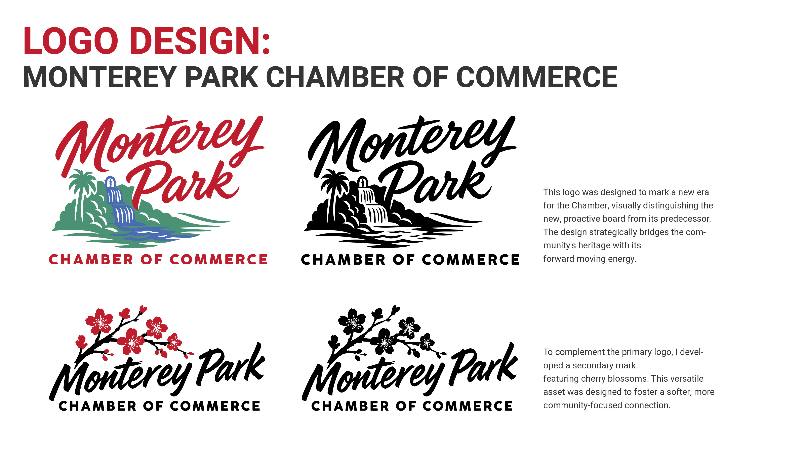
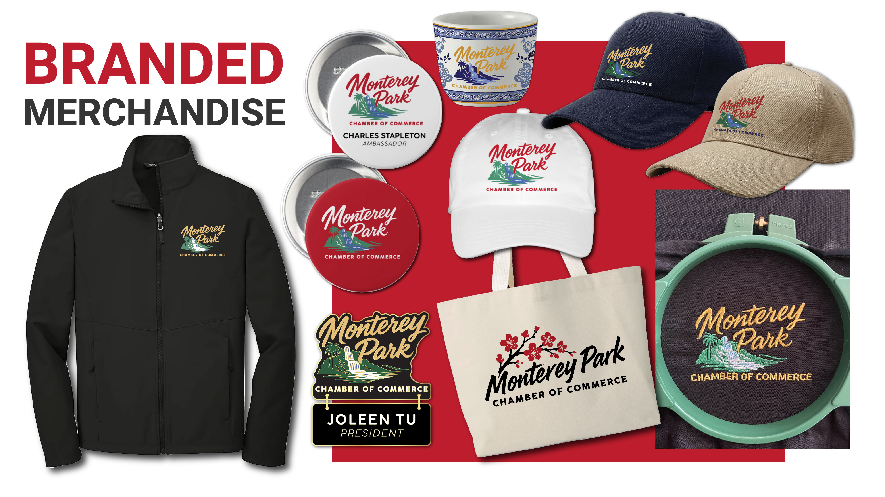
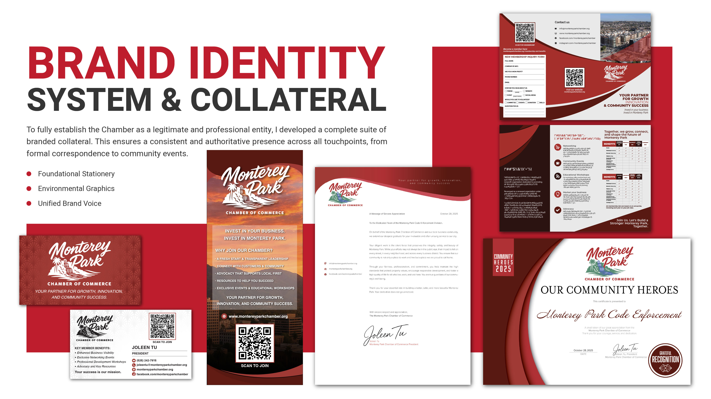
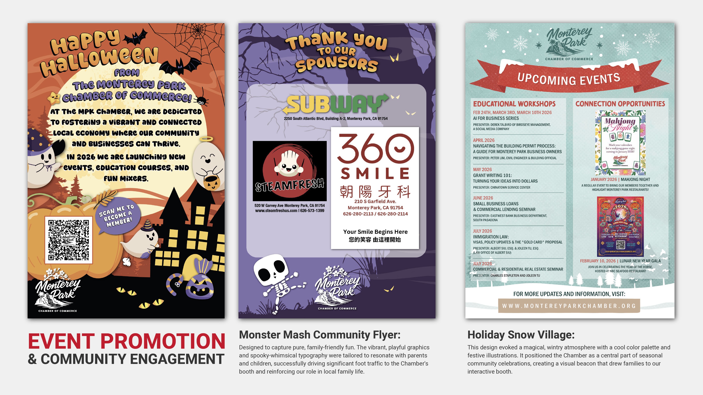
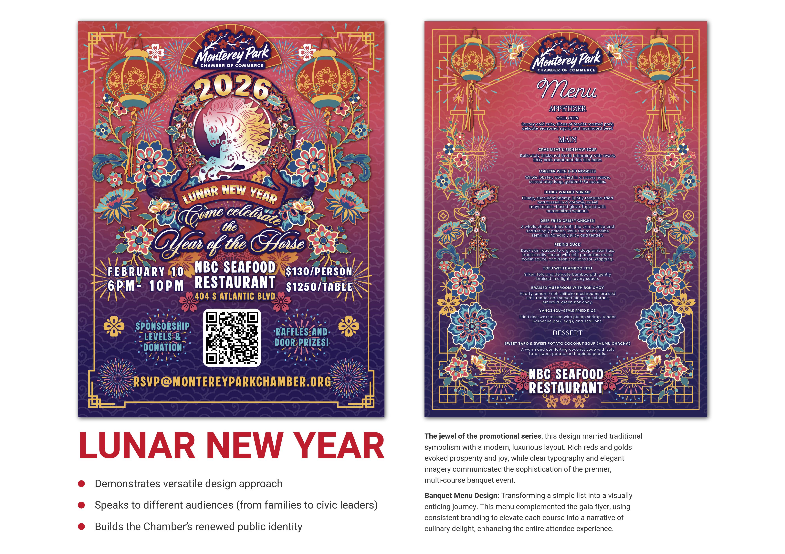
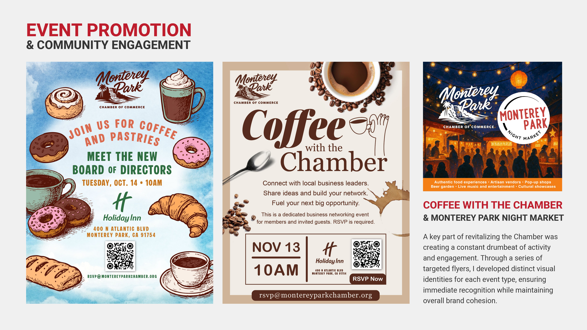
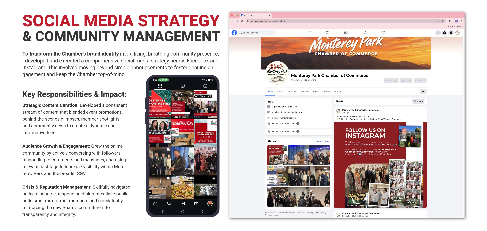

Creative Direction
Monterey Park Chamber of Commerce
As Marketing Chair and Creative Director, I led the visual and strategic revitalization of a historic Chamber—building a brand system, event collateral, and community programming that feels polished for sponsors and approachable for the neighborhood.

Logo Design
Two marks anchor the Chamber’s renewed identity—a primary logo that bridges heritage and forward momentum, and a secondary cherry blossom mark for softer, community-facing moments.
The primary lockup pairs brush-lettered “Monterey Park” with a palm-and-waterfall landscape, visually distinguishing the new, proactive board from its predecessor. The secondary mark adds cherry blossoms above the wordmark for versatile use across merchandise, seasonal programming, and neighborhood events.

Branded Merchandise
Member pride starts with things people actually want to wear and carry. I extended the identity across embroidered jackets, caps, buttons, name badges, tote bags, and drinkware—each piece spec’d for production and photographed for the Chamber’s member store and sponsor outreach.
The cherry blossom mark appears on community-facing items like the canvas tote, while the primary logo anchors ambassador and leadership pieces—keeping recognition consistent without feeling one-note.

Brand Identity System & Collateral
A full stationery and print suite establishes the Chamber as a professional partner for local business—not just a membership card in a drawer.
Business cards, letterhead, rack cards, tri-fold brochures, and certificates of recognition share a unified voice: deep red curves, sunset photography of Monterey Park, and QR codes that bridge print to digital membership. Every piece answers the same question—why join, and what happens next.
- Foundational stationery Letterhead, business cards, and membership inquiry forms with consistent hierarchy and contact paths.
- Environmental graphics Rack cards and banners designed for lobby display, tabling events, and sponsor-facing moments.
- Unified brand voice Copy and layout systems that read confident for civic leaders and welcoming for small business owners.

Event Promotion & Community Engagement
Revitalizing the Chamber meant creating a constant drumbeat of activity—seasonal flyers that feel distinct at a glance but unmistakably on-brand.
The Monster Mash Halloween flyer leans into family-friendly whimsy to drive foot traffic and membership scans. A matching sponsor thank-you piece keeps partner recognition cohesive. The Holiday Snow Village calendar lays out 2026 workshops and connection events in a cool, wintry palette built to read as a keepsake, not a bulletin.

Lunar New Year Gala
The Year of the Horse gala is the jewel of the promotional series—traditional symbolism married to a modern, luxurious layout that speaks to families, sponsors, and civic leaders alike.
The event flyer layers lanterns, florals, and a stylized horse illustration over a red-to-purple gradient, with clear pricing, venue, and RSVP paths. A matching banquet menu extends the experience to the table, so attendees feel the Chamber’s renewed identity from invitation through dessert.

Coffee Mixers & Night Market
Networking events need their own personality within the larger system. I developed distinct visual identities for recurring programming—illustrated pastries for a new-board coffee morning, a warm photographic treatment for “Coffee with the Chamber,” and a painterly night-market scene for Monterey Park’s evening street festival.
Each flyer shares the same information architecture—date, venue, QR code, RSVP—so members know where to look, while the art direction signals what kind of evening to expect.

Social Media Strategy & Community Management
Brand identity only works if people see it living in the world. I developed and executed a cross-platform strategy on Facebook and Instagram—moving beyond announcements to foster genuine conversation and keep the Chamber top-of-mind across the San Gabriel Valley.
- Strategic content curation A steady mix of event promotion, behind-the-scenes glimpses, member spotlights, and community news.
- Audience growth & engagement Active responses to comments and messages, plus hashtag strategy to expand reach beyond existing members.
- Crisis & reputation management Diplomatic responses to public criticism while reinforcing the new board’s commitment to transparency and integrity.
